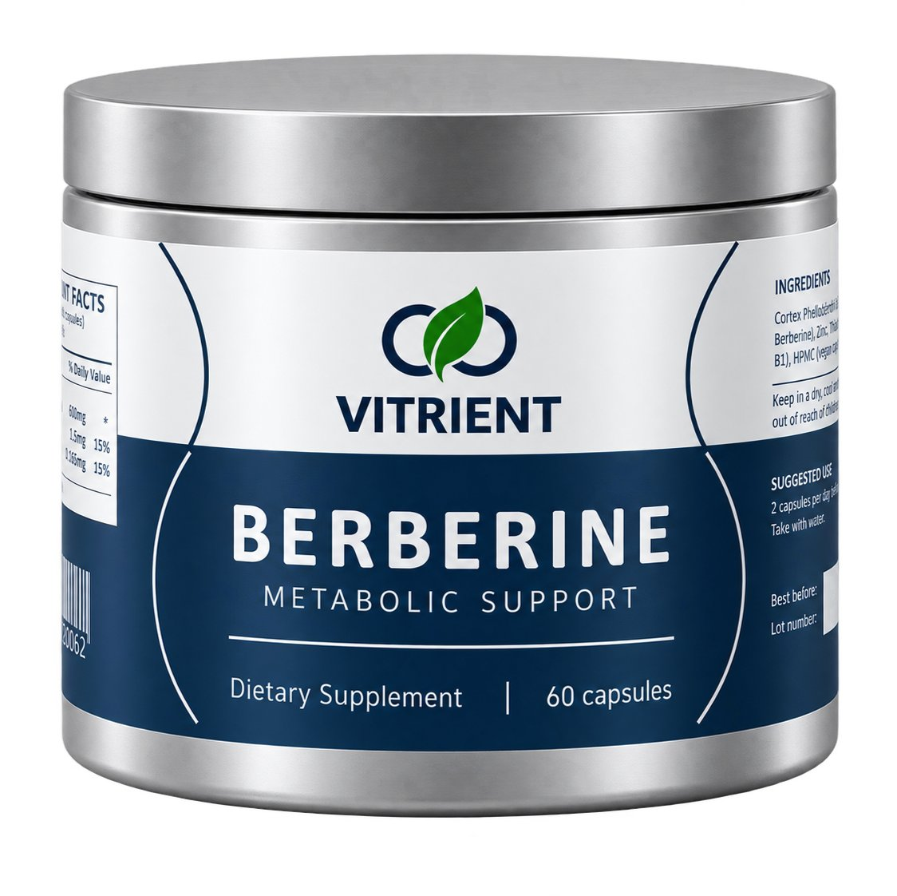
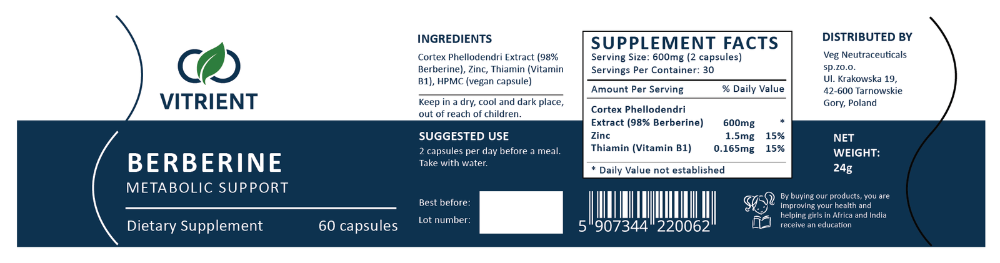

Veg Nutraceuticals
Website, e-commerce, branding, and digital marketing for a growing nutraceutical company.
Overview
From January 2022 to August 2025, I was a Web Design and Marketing Intern at Veg Nutraceuticals, working remotely for the company in Katowice, Poland. I managed website and e-commerce development while supporting product design, branding, and digital marketing for the growing nutraceutical company. The company makes a range of food supplements, and I worked on Vitrient, its brand focused on longevity supplements.
My role
I worked mostly on my own, directly with the CEO, across the website, product packaging, and marketing, splitting my time based on the tasks I was given and how important they were. I used WordPress, Shopify, Adobe Illustrator, and Adobe Photoshop.
What I did
I redesigned the company website and optimized it for e-commerce with WordPress and Shopify, and handled SEO and started a personalized blog.
On the product side, I designed labels and posters and created product mockups, and devised a manual labelling apparatus. You place a bottle in it and it aligns the label for you, so you just press the label down and rotate the bottle to stick it on straight and uniformly. It made labelling a lot faster and cleaner.

For marketing, I created posts and ads for Instagram, Facebook, and Google, designing the social media posts in Illustrator.
What I learned
I learned to use Adobe Illustrator and Photoshop to design labels and make product mockups and social media posts, and Shopify and WordPress for web design.